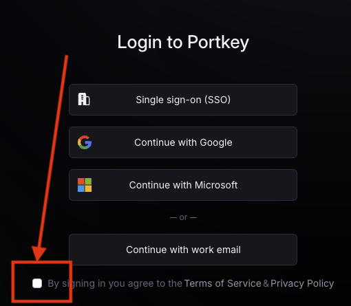
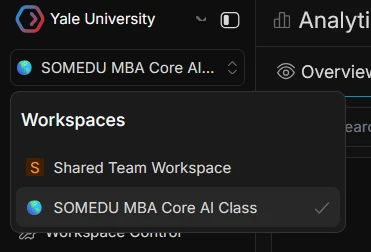
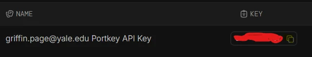

Setup Instructions
VS Code
Visual Studio Code is the editor we use in class. Install it first; the sections below assume you are working in VS Code.
- Go to https://code.visualstudio.com/
- Click Download for Windows or Download for Mac (the site detects your OS)
- Run the installer and accept the default options
- Open VS Code and complete any first-run setup prompts
Get Portkey API Key
You need a Yale Portkey API key before you configure Codex. Do not share the key, paste it into screenshots, or put it in homework zips or GitHub.
-
Go to the Portkey AI website. Before you click Single sign-on (SSO), scroll down and check the box that says you agree to the Terms of Service & Privacy Policy. It sits below the login buttons and is easy to miss — if it is unchecked, SSO often fails and looks like a login error. Then click Single sign-on (SSO) and sign in with your Yale email / NetID.

-
In the top left, open Workspaces and choose SOMEDU MBA Core AI Class.

-
Open API Keys, then click the copy icon next to your key. Immediately paste the key into a plain text file (Notepad on Windows, TextEdit or Notes on Mac) and save it somewhere easy to find, such as your Desktop or Documents folder. You will need this key again in the Codex setup steps below — do not rely on only copying it to the clipboard.

Do not put the key in homework folders, screenshots, or GitHub.
Connect Codex to Portkey
You should now have VS Code installed and your Portkey API key saved in a text file. Next, install the Codex extension and connect it to that key. Pick your computer and follow the step-by-step guide:
Python
Install Python
- Windows:
- Go to python.org/downloads/windows
- Download and run the latest installer
- Important: Check the box that says
Add Python to PATHbefore clicking "Install Now"
- Mac:
- Go to python.org/downloads/mac-osx
- Download the latest macOS
.pkginstaller - Open the installer and follow the installation steps
Check that Python works
Open Codex and ask: "Check if I have Python installed and tell me the version." If Codex reports a version number, you are set. Homework scripts and Codex both use this same Python install.
Or check without AI: In VS Code, open the integrated terminal (Ctrl + ` or View > Terminal) and run:
python --versionIf you see a version number, Python is installed.
React + Node.js
For a video walkthrough on how to install React and Node.js, see this YouTube tutorial.
Install Node.js
- Go to https://nodejs.org/
- Download the LTS version for your operating system (recommended)
- Run the installer and follow the prompts
- Note: The installer may offer optional tools for building native modules. If you run into errors during this step, you can safely skip installing those optional tools — React and Node.js will work fine without them.
Check that Node and npm work
Open Codex and ask: "Check if I have Node and npm installed and tell me the versions." If Codex reports version numbers, Node.js is installed.
Or check without AI: In VS Code, open the integrated terminal (Ctrl + ` or View > Terminal) and run:
node -v
npm -vIf you see version numbers, Node.js is installed.
Create a React app
Create a folder for your app (e.g. my-app), open it in VS Code (File > Open Folder), then in the integrated terminal run:
npx create-react-app .That scaffolds the React files in the current folder. To run the app:
npm startThe app opens in your browser at http://localhost:3000. VS Code usually detects Node.js automatically — no path setup needed.
GitHub
Video walkthroughs for installing Git: Windows · Mac.
Create a GitHub Account
- Go to https://github.com/
- Click Sign up and follow the instructions to create a free account.
- Verify your email address.
Download and Install Git
- Windows: Go to https://git-scm.com/download/win and download the "64-bit Git for Windows Setup." Run the installer and accept the default settings.
- Mac: Simply open your terminal and type
git. A popup will appear asking if you want to install the "Command Line Developer Tools." Click Install. (Alternatively, usebrew install gitif you have Homebrew).
Check that Git works
Open Codex and ask: "Check if I have Git installed and tell me the version." If Codex reports a version number, Git is installed.
Or check without AI: In VS Code, open the integrated terminal (Ctrl + ` or View > Terminal) and run:
git --versionIf you see a version number, Git is installed. If you get an error, finish the install step above and try again.
Integrate GitHub with VS Code
Once Git is installed, open Codex and ask:
"Help me connect VS Code to GitHub. Set my global git user.name to Your Name and user.email to your@yale.edu, then walk me through signing in to GitHub in VS Code."
Use the same email as your GitHub account. Codex will run the Git commands for you. When it tells you to sign in, click the Accounts icon (bottom-left) → Sign in with GitHub and complete the browser prompt once — Codex cannot do that part for you.
After that, tell Codex what you want in plain English when you need to clone, commit, or push.
Cursor (optional)
Cursor is another AI vibe-coding tool built on VS Code with some extra features. Codex + Portkey is what we use in class; Cursor is optional if you want to explore on your own.
- Sign up at
https://www.cursor.com
with your
.eduemail for free student access. - Download and install Cursor from the same site.
- Most VS Code extensions and shortcuts work in Cursor; the Python and GitHub steps above apply the same way.